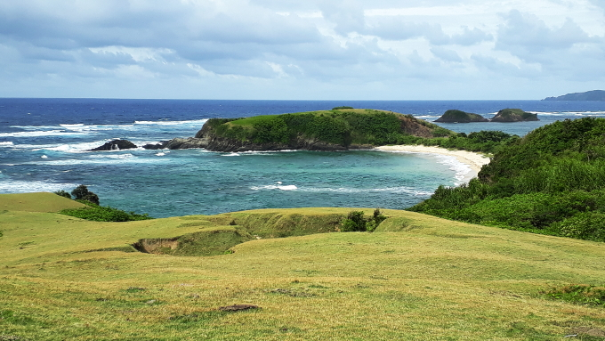
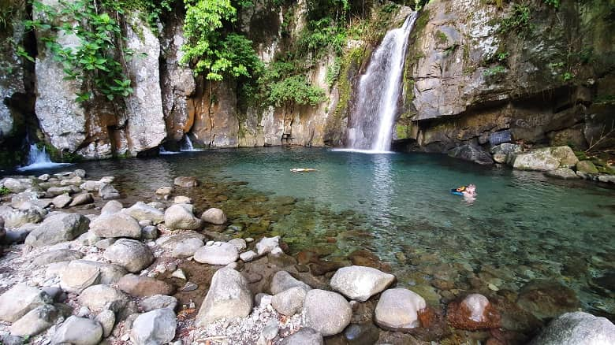

Caramoan, Camarines Sur
Known for its perfect cone shape, Mayon Volcano is an active stratovolcano and one of the Philippines' most iconic natural landmarks.

Pandan, Catanduanes
aaaaaaaaaaaaaaaaaaaaaaaaaaaaaa.

Vera Falls
AAAAAAAAAAAAAAAAAAAAAAAAAAAAAAAAAAAAAAAAA

Sumlang Lake
A serene lake offering stunning views of Mayon Volcano, perfect for bamboo rafting and local crafts shopping.
Kawa-Kawa Hill
Known as the "Hill Without a Peak," featuring life-sized Stations of the Cross and offering great views of the surrounding area.
Quitinday Green Hills
Known as the "Chocolate Hills of Albay," featuring rolling hills perfect for hiking and photography.